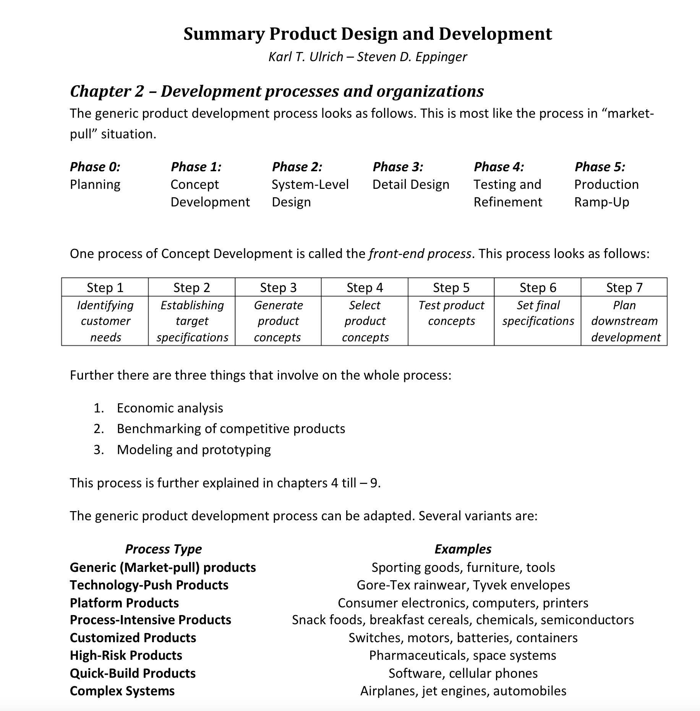

Notes from Guide to Product Design and Development
A Comprehensive detailed book on Product Design and Development, extending 400+ pages. An invaluable resource for Engineers, Designers, Business-Owners of all types.
From simple items like chairs, mirrors, house-fans to complex products such as cars and airplanes, this book lays out intricacies step by step to engineer them. For Concrete understanding, I went through Zoho’s Fine Tooling Product - Cutoff Saws KA-CS01.

So, How does one build it?
One condensed way to think about is sub-dividing into modules, tasks.
Cutoff Saws KA-CS01:
Total Number of Tasks: 80 Tasks
- Concept Development: 10 tasks
- Design and Engineering: 20 tasks
- Prototyping: 10 tasks
- Testing and Validation: 15 tasks
- Manufacturing: 15 tasks
- Launch and Marketing: 10 tasks
When I wondered, what tasks might be the most difficult for this?
I found it’s Design and Engineering.
This requires precise technical expertise in few fields.
It also requires integrating from available supply-chain components in the market.
Cutoff Saw made from Tamil Nadu, India
1. Why read this work?
– Interested to develop products
– Be ware of the process
– Learn basic finances, marketing, sales of product
– Learn market, customer needs
– Find out to meet needs of customer
2. Why trust this work?
– Practical
– Authors have worked in specific industries, Chapter 1:
What makes a successful product?
Since childhood, I can think of many products.
Television, basic Fan which is part of every household.
In normal middle-class household, consider the products, you’d see.
Refrigerator, Air-conditioning, Pressure Cooker, Mixie, Grinder, Induction Stove, Clock, Motorcycle
We get following benefits:
- Quality assurance
- Documentation leads to easier co-ordination
- Managing
- Planning & Improvement, Generic Processes for Product-Development, In detail process!
I didn’t conceive of it this way!
How impressive? Japanese, Americans, Germans, English frequently experiment in product development, take the rural background industrialists like Saravana Stores, RMKV, Pothys owner, while no doubt, they are successful financially, yet look how impressive, detailed, thorough the Western world does,
Organized, systematic, experiment, innovate. Typically they are family lead, because labor is cheap for firms like RMKV, Pothys, Chennai Silks, they are fine, they also are locally competitive, I did hear they export abroad their material/product.
Yet Do you believe there is R&D as part of their work?
Pull Opportunities from Capabilities:
Theories of competitive advantage abound, but most spring from the idea that firms achieve above-average profits by exploiting unique resources.
To provide advantage, a resource must be:
• Valuable. To be valuable, a resource must either allow a firm to achieve greater per- formance than competitors or reduce a weakness relative to competitors.
• Rare. Given competition, a valuable resource must be rare.
• Inimitable. For value and rarity to persist, a resource must not be easily imitated.
• Nonsubstitutable. Even if valuable, rare, and inimitable, a resource providing advantage can’t be easily substituted.
Study Customers:
Opportunities can be identified by studying customers in a selected market segment. These studies (also called user anthropology or consumer ethnography) provide a deeper understanding of the true customer needs than you can obtain through surveys. Chapter 8:
How do you go about executing this?
A medical supply company retained a product design firm to develop a reusable syringe with precise dosage control for outpatient use. One of the products sold by a competitor is shown in Exhibit 8-1. To focus the development effort, the medical supply company identified two major problems with its current product: cost (the existing model was made of stainless steel) and accuracy of dose metering. The company also requested that the product be tailored to the physical capabilities of the elderly, an important segment of the target market. To summarize the needs of its client and of the intended end users, the team established seven criteria on which the choice of a product concept would be based:
• Ease of handling.
• Ease of use.
• Readability of dose settings .
• Dose metering accuracy.
• Durability.
• Ease of manufacture.
• Portability.
The team described the concepts under consideration with the sketches shown in Ex- hibit 8-3. Although each concept nominally satisfied the key customer needs, the team was faced with choosing the best concept for further design, refinement, and production. The need to select one syringe concept from many raises several questions:
• How can the team choose the best concept, given that the designs are still quite abstract?
• How can a decision be made that is embraced by the whole team?
• How can desirable attributes of otherwise weak concepts be identified and used?
• How can the decision-making proce·ss be documented?
This chapter uses the syringe example to present a concept selection methodology addressing these and other issues.

Schema:
[Power Supply] –> [On/Off Switch] –> [Motor] –> [Blade]
| |
v v
[Speed Control] [Quick Lock Vise]
|
v
[D-Shaped Handle]
Safety Features
- [Spark Guard] surrounds [Blade].
- [Double Insulation] encases [Motor] and [Power Supply].
Diagram Symbols:
- Power Supply (Plug Symbol) → On/Off Switch (Toggle Symbol) → Motor (Circle with “M”) → Blade (Circle with Jagged Edges).
- On/Off Switch → Speed Control (Variable Resistor Symbol).
- Motor → Quick Lock Vise (Clamp Symbol).
- Spark Guard (Shield Symbol) surrounds the Blade.
- Double Insulation (Box Symbol) encases the Motor and Power Supply.
Financial Summary
- Development Costs: $500,000
- Production Costs: $100 per unit
- Marketing Costs: $200,000
- Expected Revenue: $2,000,000 (10,000 units at $200 each)
- Total Costs: $1,700,000
- Profit: $300,000
- Profit Percentage: 15%
Task Breakdown for Building the Product
Total Number of Tasks: 80 Tasks
- Concept Development: 10 tasks
- Design and Engineering: 20 tasks
- Prototyping: 10 tasks
- Testing and Validation: 15 tasks
- Manufacturing: 15 tasks
- Launch and Marketing: 10 tasks
1. Concept Development (10 Tasks)
- Conduct market research to identify target audience and competitors.
- Analyze customer needs and pain points.
- Define product requirements and specifications.
- Identify key features (e.g., motor power, safety features, ergonomics).
- Conduct a feasibility study (technical, financial, and operational).
- Develop a product concept and initial design sketches.
- Create a project timeline and budget.
- Identify potential risks and mitigation strategies.
- Assemble a cross-functional team (engineering, design, marketing, etc.).
- Finalize the product concept and obtain stakeholder approval.
2. Design and Engineering (20 Tasks)
Mechanical Design (8 Tasks) - Design the motor housing and internal components. - Develop the high overload capacity mechanism. - Design the quick lock vise mechanism. - Design the spindle lock mechanism. - Create the large spark guard and integrate it into the design. - Optimize the product’s weight and balance. - Develop 3D models of the product. - Perform initial simulations for stress and performance.
Ergonomics (4 Tasks) - Design the D-shaped handle for comfort and usability. - Conduct ergonomic studies to refine the handle design. - Test the handle design with user groups. - Finalize the ergonomic design based on feedback.
Safety Features (4 Tasks) - Design double insulation for operator safety. - Develop wobbling minimization mechanisms. - Integrate safety features into the overall design. - Perform initial safety simulations.
Electrical Design (4 Tasks) - Design the motor and electrical system. - Select components (e.g., wiring, switches, insulation materials). - Develop circuit diagrams and electrical layouts. - Ensure compliance with electrical safety standards.
3. Prototyping (10 Tasks)
- Create a detailed prototype plan.
- Source materials and components for prototyping.
- Build the first physical prototype.
- Test the prototype for basic functionality.
- Refine the design based on initial prototype feedback.
- Build a second prototype with improvements.
- Conduct performance testing on the second prototype.
- Conduct safety testing on the second prototype.
- Conduct ergonomic testing on the second prototype.
- Finalize the prototype design for testing and validation.
4. Testing and Validation (15 Tasks)
Performance Testing (4 Tasks) - Test motor performance under load (2,200W, 3,800 RPM). - Validate high overload capacity in tough applications. - Test the quick lock vise and spindle lock mechanisms. - Evaluate overall product durability.
Safety Testing (4 Tasks) - Test double insulation for operator safety. - Evaluate wobbling minimization mechanisms. - Test the spark guard for effectiveness. - Conduct electrical safety testing.
Ergonomics Testing (3 Tasks) - Conduct user testing for handling comfort. - Evaluate overall product usability. - Refine ergonomic features based on feedback.
Compliance Testing (4 Tasks) - Test the product for compliance with industry standards. - Obtain necessary certifications (e.g., CE, UL). - Conduct environmental testing (e.g., temperature, humidity). - Finalize testing reports and documentation.
5. Manufacturing (15 Tasks)
Supplier Selection (4 Tasks) - Identify and evaluate potential suppliers. - Negotiate contracts and pricing with suppliers. - Source high-quality components (e.g., motor, materials). - Establish quality standards for suppliers.
Production Planning (5 Tasks) - Design the assembly line and manufacturing process. - Develop production schedules and timelines. - Train manufacturing staff. - Set up quality control processes. - Conduct a pilot production run.
Quality Control (3 Tasks) - Inspect incoming materials and components. - Perform in-process quality checks during production. - Conduct final product inspections before packaging.
Packaging Design (3 Tasks) - Design packaging that protects the product. - Include user manuals, safety instructions, and marketing materials. - Test packaging for durability and compliance with shipping standards.
6. Launch and Marketing (10 Tasks)
Branding (3 Tasks) - Develop a brand identity and positioning for the product. - Create a product name and logo. - Design marketing materials (e.g., brochures, website).
Marketing Strategy (4 Tasks) - Develop a marketing plan and budget. - Create campaigns to highlight key features. - Launch digital marketing efforts (e.g., social media, ads). - Organize promotional events or demos.
Distribution (2 Tasks) - Establish distribution channels (e.g., online, retail). - Set up inventory management and logistics.
Customer Support (1 Task) - Set up customer support systems (e.g., troubleshooting, warranty claims).